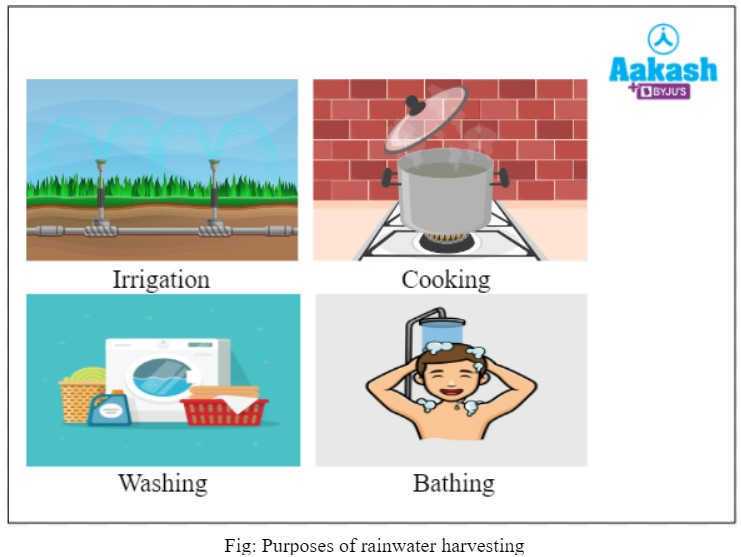
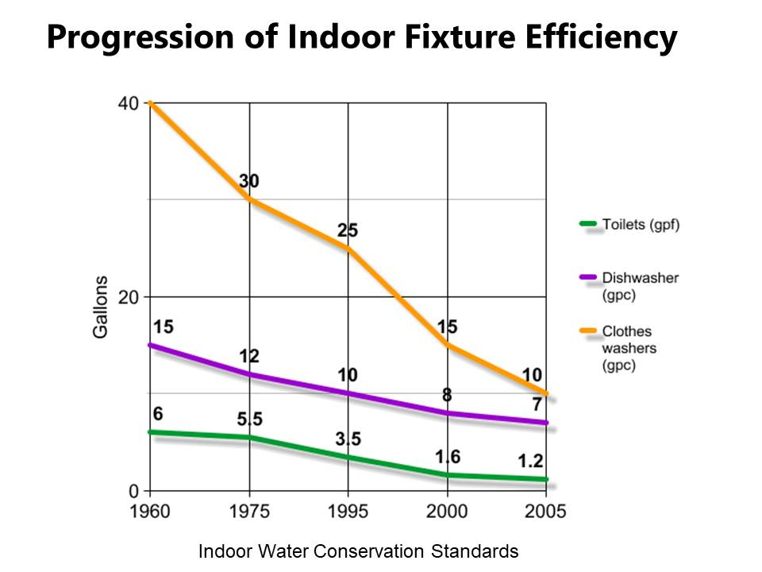
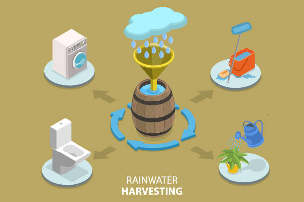

!--------------- " Benefits Of Rainwater Harvesting " ---------------!
There are several Benefits :-
THE WATER CONSERVATION BENEFITS OF RAINWATER HARVESTING

1.The rainwater that falls on your roof and property is essentially free.
All it takes is a method to harvest it into a tank or cistern for later use.
2.Rainwater harvesting can be a great educational tool to get people to recognize their individual or household water usage.
This can get them to start conserving water in other areas around their home.
3.For communities that rely on imported water to supply their needs, collecting rainwater that falls naturally in the community can reduce the
need for imported water.
4.Rainwater harvesting helps utilities reduce peak demands during summer months, saving treated water for more important and appropriate water uses.
5.While rainwater can be a perfect primary water source for many uses and situations, it is also a great backup water supply for emergency situations..
THE ENVIRONMENTAL BENEFITS OF RAINWATER HARVESTING

1.Rainwater harvesting can reduce stormwater runoff from a property. The elimination of runoff can reduce contamination of surface water with pesticides,
sediment, metals, and fertilizers.
2.By reducing stormwater runoff, rainwater harvesting can reduce a storm’s peak flow volume and velocity in local creeks, streams, and rivers,
thereby reducing the potential for streambank erosion.
3.Rainwater harvesting systems can be employed as simple and effective methods to meet a municipality’s stormwater management program
requirements of individual properties.
4.It is an excellent source of water for plants and landscape irrigation since it has no chemicals such as fluoride and chloramines (chlorine).
THE ECONOMIC BENEFITS OF RAINWATER HARVESTING

1.Collecting and using rainwater to replace municipal water use reduces your water bill
2.Reducing municipal water use for areas such as irrigation reduces the amount of water that a municipality has to treat and pump.
This, in turn, reduces water service cost to a municipality.
3.The widespread implementation of rainwater harvesting within a municipality’s service area can reduce the long-term water development needs of a
city, allowing the city to use their existing water infrastructure investments more efficiently. The cost to the community to supply treated water
is becoming more expensive every year. The cost to construct dams, pipes, and treatment plants, not to mention the cost of maintenance and
infrastructure replacement is huge. As water users, the rate-payers in the community ultimately will foot this rising bill. Therefore, the
practice of rainwater harvesting can reduce water demand and thus allow municipalities to provide potable water service at a lower cost.
4.Designing and installing rainwater collection systems can provide sustainable jobs for the economy of the future.
The rainwater harvesting industry can become a leading employer in the green infrastructure movement.
5.Rainwater stored onsite in a rainwater harvesting system can be available for wildfires and help protect the house and property.
Insurance companies can offer discounts for storing water onsite for fire protection.
THE WATER-ENERGY NEXUS BENEFITS OF RAINWATER HARVESTING

While the logical use of rainwater harvesting is for water conservation purposes, it also reduces energy use within a community.
1.Typically, the end use of the rainwater is located on the property where the rainwater is collected. Replacing municipal water use at a home and property
with rainwater reduces the amount of water that a municipality has to treat and then pump to your house. The treatment and pumping of municipally
provided water require a lot of energy.
2.The implementation of rainwater harvesting can help meet new standards of energy and water efficiency ratings and codes that are being developed in
communities.